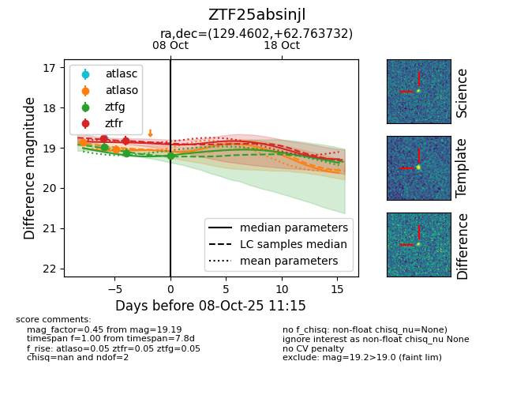
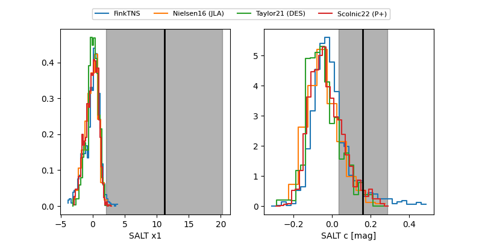

FINK: ZTF25absinjl
Lasair: ZTF25absinjl
ALeRCE: ZTF25absinjl
ZTF25absinjl (ztf,fink)
equatorial (ra, dec) = (129.4602,+62.76373)
galactic (l, b) = (153.3185,+36.00176)


last atlaso=19.03, ztfg=19.19, ztfr=18.81
2 atlaso, 3 ztfg, 2 ztfr detections